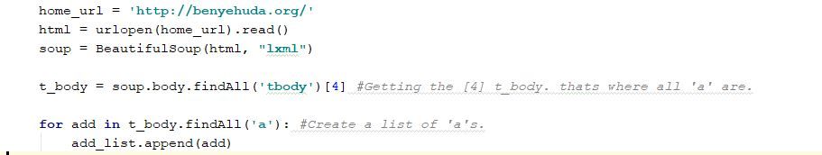
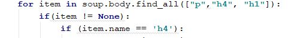
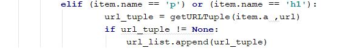
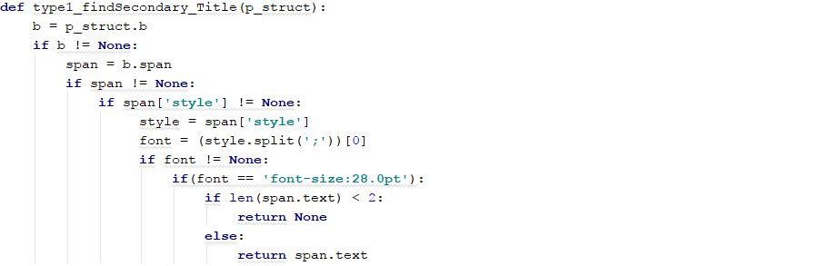
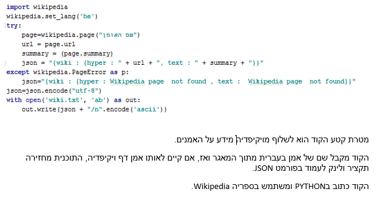

בהנחיית ד"ר יעל נצר, המחלקה למדעי המחשב, אוניברסיטת בן גוריון בנגב
על הפרויקט
הפרויקט עוסק ביצירת מהדורות אלקטרוניות של נכסי הספרות העברית וריכוזן באתר אינטרנט לטובת הציבור, בחינם ובאופן
חופשי לשימוש. כמו כן,המטרה היא להביא את כלל היצירה העברית אל האינטרנט, מתוך החומר הנמצא ברשות הציבור, לפי חוק
זכויות יוצרים
רקע
כאשר חיפשנו תחום מעניין "להנגיש" באמצעים דיגיטליים, הבחנו כי לא קיים מנוע חיפוש דיגיטלי אחרי מאמרים שנמצאים באתר בן גוריון. מנוע חיפוש מציג מאמרים דרך כמה אפשרויות בחירה: בדף נפרד, כ jason וכדומה.
לכן, שמנו לנו למטרה לפרסר את המידע שהוצאנו מאתר פרויקט בן יהודה ולעשות מניפולציות דיגיטליות שונות כדי להנגיש אותם למשתמשים במידע בצורה נוחה ואינפורמטיבית, וכן להשתמש בפורמט שיצרנו כדי להציג בעצמו מידע.
תהליך העבודה
העבודה התחלקה לכמה שלבים:
שלב ראשון: הוצעת המידע מפרויקט בן יהודה:
1) מטרת הקוד היא לשלוף מידע מאתר "פרויקט בן יהודה" לגבי יוצרים ויצירותיהם.
הקוד כתוב בשפת פייתון, ומשתמש בספריית BeautifulSoup. ספרייה שנועדה לשליפת מידע מאתרי אינטרנט הכתובים בשפת HTML.
בעזרת הספרייה נוכל להיכנס באופן אוטומטי לכל לינק הנמצא באתר, וכמובן לקבל מידע אודות שם היוצרים, שם היצירות, תוכן
היצירות ועוד.
בתור התחלה, אספנו את כל הכתובות הנמצאות בעמוד הראשי, לאחר מכן , במשך כתיבת התוכנית, ניסינו להבין את התבנית בה כתובה
האתר. לבסוף, גילינו שקוד הHTML של רוב המוחלט של היוצרים נכתב בארבע תבניות שונות.

2) לדוגמא, באחת התבניות של יוצרים, גילינו שכותרות גדולות (כמו "שירה" , "פרוזה" ,"מאמרים" וכו') הן תחת תבנית H4
בHTML.

3) מנגד, היצירות עצמן כלומר , שמן ולינק לעמוד היצירה, תחת תבנים P או h1 .

4) דוגמא לשליפת מידע לגבי כותרת משנית(כמו "שירה"). ספריית BeautifulSoup מאפשרת לנו לחפש באופן מדויק בתוך מבנה הקוד
של HTML, על מנת למצוא כותרות ספציפיות אותן אנחנו מחפשים.

רקע על מחברים וסופרים מאתר ויקיפדיה:

מנוע חיפוש יוצרים
*חפש לפי שם היוצר
שם היוצר
תוצאות החיפוש:
מנוע חיפוש יצירות
*חפש לפי שם המחבר, סוג היצירה, שם היצירה, ובחר באיזה פורמט להציג את התוצאות
שם היוצר
סוג היצירה
שם היצירה
פורמט
תוצאות החיפוש:
נתונים סטטיסטיים
יוצרים לפי עיר הולדתם
כל סמן על המפה מייצג את מקום היוולדו של אחד היוצרים (או כמה מהם)
לחץ על הסמן בכדי לראות את שמות היוצרים שנולדו במקום